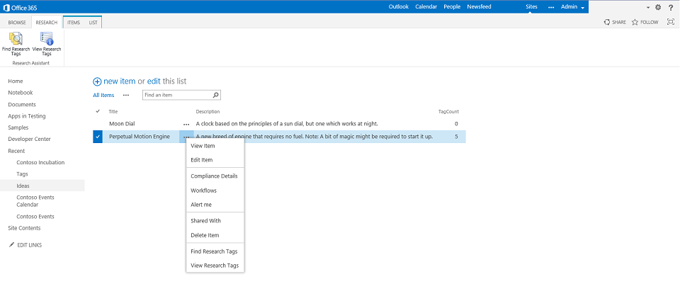
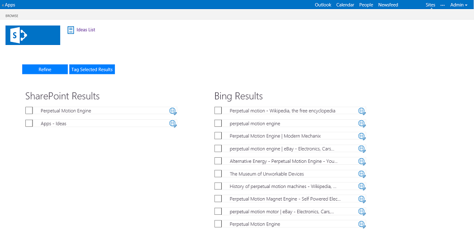
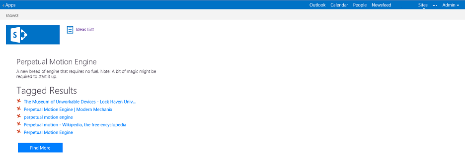

This sample demonstrates how to use JavaScript, jQuery, the SharePoint JavaScript object model, the SharePoint Search REST API, and the Windows Azure Marketplace Bing Search API in a SharePoint-hosted app.
Last modified: February 23, 2014
In this article
The app in action
Prerequisites
Key components of the sample
Configure the sample
Troubleshooting
Features in this sample
Change log
Additional resources
Wouldn't it be great to incorporate the power of Bing search and SharePoint search in your app? The Contoso incubate search app shows exactly how to do that.
Contoso has a team of researchers, and they're always having bright ideas that they store in a SharePoint list. To save time in the incubation process, they want as much relevant information as possible to be associated with the ideas. They know that they can use Bing to search for publicly available documents on the web, and they can always leverage previous work they've done in-house by using SharePoint search. But they want the search to be easily accessible when they're actually working on an idea. They'd love to see results from the web displayed alongside their own SharePoint search results so they can quickly tag the information they think might be relevant to each idea. Of course, they want to share their research findings with the rest of the team, so they'd like to store those tagged items so the whole team can benefit.
This sample is the app that Contoso built to help their research team. The ideas are stored in a SharePoint list that provides ribbon controls and menu items you use to access the app's search page. You can search SharePoint data (by using the SharePoint Search REST API), the Internet (by using the Bing Search API), or both. You can preview search results, and then tag useful results so you can quickly access them later. The URLs of tagged results are stored in a hidden list that is related to the Ideas list by a SharePoint lookup field. Therefore implementing the app as a SharePoint-hosted app is the best approach.
The app in action
The app opens and displays a link to the Ideas list, as shown in Figure 1.

You can find or view research tags from the ribbon or from a list item menu, as shown in Figure 2.

Figure 3 shows the page that opens when you choose Find Research Tags. Here you can choose your search parameters.

Figure 4 shows the search results.

You can tag results, as shown in Figure 5. This links them to the current list item in the Ideas list.
Figure 6 shows the Tagged Results list.

You can remove a tag from the Tagged Results list. Figure 7 shows the confirmation dialog box for removing a tag.

Prerequisites
This sample requires the following:
-
A developer key for the Windows Azure Marketplace Bing Search API
-
Visual Studio 2013 (Professional or Ultimate edition)
-
An Office 365 Developer Site, or a SharePoint 2013 environment configured to host apps. You can get a free trial here: Sign up for an Office 365 Developer Site
Key components of the sample
The Contoso_IncubationApp project in the sample contains the following key components:
-
App.css style sheet in the Content folder
-
AppManifest.xml manifest file
-
Various images in the Images folder
-
Default.aspx file in the Pages folder
-
App.js file in the Scripts folder
-
SearchAssistMenu custom action definition
-
SearchAssistRibbon custom action definition
All other files are automatically provided by the Visual Studio project template for SharePoint-hosted apps, and they have not been modified for this sample app.
Configure the sample
Follow these steps to configure, build, and run the sample app.
To configure and build the sample
-
Browse to the Windows Azure Marketplace (http://datamarket.azure.com/dataset/bing/search) and sign in using your Microsoft account credentials.
-
On the My Account tab, in the my account section, choose ACCOUNT KEYS.
-
Choose the Add button.
-
Enter a description (such as IncubationApp) and then choose Save. Copy the new key to the clipboard.
-
Open the Contoso_IncubationApp.sln file in Visual Studio.
-
In Solution Explorer, choose the Contoso_IncubationApp project.
-
In the Properties window, in the Site URL property, enter the URL of the SharePoint site to deploy the app to. Be sure to include the closing forward slash.
If prompted, log on with your SharePoint or Office 365 credentials.
-
In Solution Explorer, expand the Scripts folder, and then open the App.js file.
-
Enter the key that you copied in Step 4 as the value for the accountKey variable.
-
On the menu bar, choose File>Save All.
-
On the menu bar, choose Build>Build Solution to build the solution.
To run and test the sample
-
Choose the F5 key to run the app.
If prompted, log on with your SharePoint or Office 365 credentials.
-
In the Do you trust page, choose the Trust It button to grant the app the required permissions.
-
Use the app as shown in The app in action.
Troubleshooting
Ensure you have completed all the steps in the Configure the sample section.
Features in this sample
The sample demonstrates how to use:
-
HTML and Cascading Style Sheets (CSS) to define the basic UI for an app.
-
jQuery to add fluidity and a professional look-and-feel to the UI.
-
JavaScript and the SharePoint JavaScript object model to create lists on the SharePoint host site.
-
SharePoint Search REST API to search for SharePoint items.
-
Windows Azure Marketplace Bing Search API to search for items on the Internet.
-
JavaScript and the SharePoint JavaScript object model to read and write data to lists on the host site
Change log
|
Version |
Date |
|---|---|
|
First version |
March 2014 |